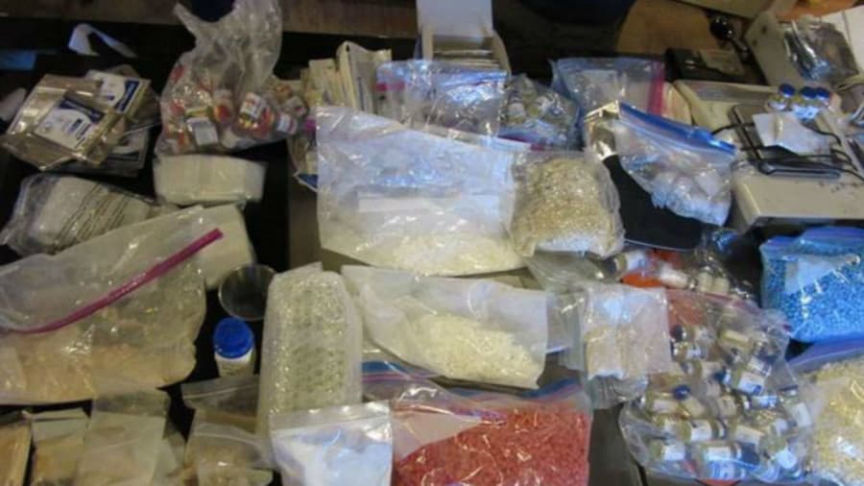
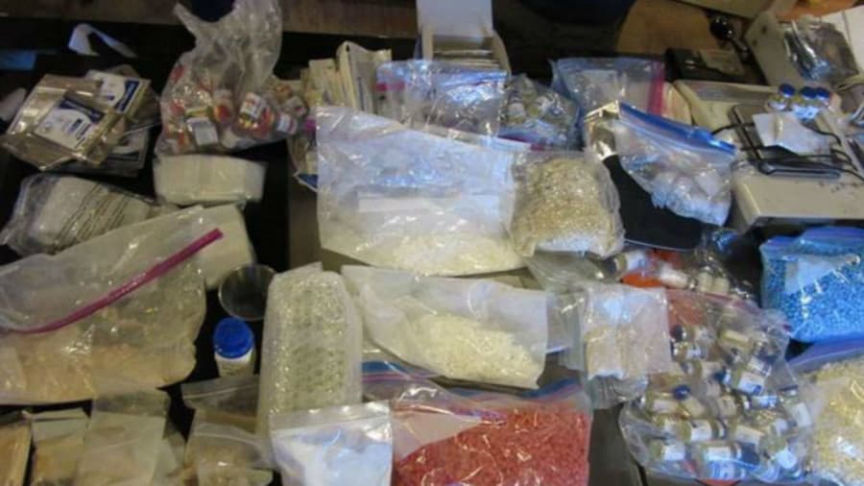

Three Sentenced in the UK for Selling Drugs on the Darkweb
~3 min read | Published on 2022-08-01, tagged Darkweb-Vendor, Sentenced using 690 words.
Three drug dealers were sentenced to prison for producing and selling kilogram quantities of drugs on the darkweb.
In October 2020, law enforcement officers in the United Kingdom intercepted two packages of drugs linked to an organized crime group. An investigation into the origin of the packages by the North East Regional Organised Crime Unit (NEROCU), the Northumbria Police, Border Force, and the National Crime Agency (NCA) led police to an address in Stanton Street, Newcastle. During a property search, police found more than 80 kilograms of Class C drugs, industrial pill presses, packaging material, and other equipment used to manufacture illicit substances. Investigators soon uncovered “a darkweb, crypto currency led enterprise with a global customer base across four continents.”

Forensic investigators uncovered evidence that led them to the ringleader, 26-year-old Kohi Choudhury. Police arrested the man and then released him as they continued investigating the conspiracy.
Then, in July 2021, Border Force officers intercepted two more packages containing Class C drugs shipped by Choudhury to addresses in the United States. The intercepted packages led investigators to two addresses. On July 12, 2021, police arrested Choudhury at his home on St. Thomas Square. Police seized the man’s electronic devices, a small number of pills, and £12,000 in cash during Choudhury’s arrest.
At an address on Lancaster Street, police found a “sophisticated drugs lab” complete with a pill press capable of producing 5,000 pills per hour. They also seized 40,000 pills, two kilograms of crystallized MDMA, ecstasy pills with a street value of £29,000, a mixer, grinder, and packaging material. The intercepted packages also led police to two more suspects, Sabir Ahmed, 25, and Arif Shomel, 25.
Choudhury pleaded guilty to conspiracy to supply a Class C substance, possessing criminal property, money laundering, and possession of a controlled substance with intent to supply. Shomel and Ahmed both pleaded guilty to conspiring to supply a Class C drug and supplying a psychoactive substance.
All three defendants appeared in court for sentencing on July 28, 2022. As the ringleader, Choudhury received the lengthiest prison sentence of 14 years behind bars. Ahmed was sentenced to three years and six months in prison, and Shomel received two years in jail.
Sergeant Hayley Turner-Douglass, a detective with NEROCU, said:
“This was a very complex investigation into the large-scale supply and distribution of illicit drugs, spanning two continents and multiple law-enforcement agencies, and I am pleased the jury saw through the lies and excuses. Thanks to excellent partnership working between law enforcement agencies including officers and staff from Northumbria Police, the National Crime Agency (NCA), UK Border Force, The Crown Prosecution Service (CPS) and with the support from the National County Lines Coordination Centre we were able to dismantle this international drugs line. Through hard work and information sharing between partners we were able put three drug dealers before the courts bringing an end to a sophisticated operation which was making harmful substances on an industrial scale resulting in thousands of pounds in profit.”
“The group attempted to hide their criminality behind false identities, legitimate companies, and innocent individuals; however, the investigation team was able to see through this web of deceit.” Working in collaboration with internal and external partners and information sharing shows how effective we can tackle serious organized crime enabling us to put three drug dealers before the courts, bringing an end to a sophisticated operation which was making thousands of pounds in profit by selling illegal and harmful substances on an industrial scale. Criminality like this has no place in our communities and we will make no apologies for our continued clampdown on anyone involved in this type of activity."
“Cocktails of drugs made by unauthorised, unqualified people like Choudhury can pose a serious risk to anyone who takes it. We urge people never to buy drugs online or from the dark web. We will continue to tackle the illegal supply of drugs and dismantle the criminal organisations who supply them as part of our dedicated initiative Operation Sentinel.”
Dark web and crypto currency – how three international drug dealers found themselves behind bars | archive.is, archive.org, beta.northumbria.police.uk
In October 2020, law enforcement officers in the United Kingdom intercepted two packages of drugs linked to an organized crime group. An investigation into the origin of the packages by the North East Regional Organised Crime Unit (NEROCU), the Northumbria Police, Border Force, and the National Crime Agency (NCA) led police to an address in Stanton Street, Newcastle. During a property search, police found more than 80 kilograms of Class C drugs, industrial pill presses, packaging material, and other equipment used to manufacture illicit substances. Investigators soon uncovered “a darkweb, crypto currency led enterprise with a global customer base across four continents.”

Police seized thousands of pills and kilograms of MDMA during the investigation
Forensic investigators uncovered evidence that led them to the ringleader, 26-year-old Kohi Choudhury. Police arrested the man and then released him as they continued investigating the conspiracy.
Then, in July 2021, Border Force officers intercepted two more packages containing Class C drugs shipped by Choudhury to addresses in the United States. The intercepted packages led investigators to two addresses. On July 12, 2021, police arrested Choudhury at his home on St. Thomas Square. Police seized the man’s electronic devices, a small number of pills, and £12,000 in cash during Choudhury’s arrest.
At an address on Lancaster Street, police found a “sophisticated drugs lab” complete with a pill press capable of producing 5,000 pills per hour. They also seized 40,000 pills, two kilograms of crystallized MDMA, ecstasy pills with a street value of £29,000, a mixer, grinder, and packaging material. The intercepted packages also led police to two more suspects, Sabir Ahmed, 25, and Arif Shomel, 25.
Ah, it's Choudhury, Ahmed, and Shomel.
Choudhury pleaded guilty to conspiracy to supply a Class C substance, possessing criminal property, money laundering, and possession of a controlled substance with intent to supply. Shomel and Ahmed both pleaded guilty to conspiring to supply a Class C drug and supplying a psychoactive substance.
All three defendants appeared in court for sentencing on July 28, 2022. As the ringleader, Choudhury received the lengthiest prison sentence of 14 years behind bars. Ahmed was sentenced to three years and six months in prison, and Shomel received two years in jail.
Sergeant Hayley Turner-Douglass, a detective with NEROCU, said:
“This was a very complex investigation into the large-scale supply and distribution of illicit drugs, spanning two continents and multiple law-enforcement agencies, and I am pleased the jury saw through the lies and excuses. Thanks to excellent partnership working between law enforcement agencies including officers and staff from Northumbria Police, the National Crime Agency (NCA), UK Border Force, The Crown Prosecution Service (CPS) and with the support from the National County Lines Coordination Centre we were able to dismantle this international drugs line. Through hard work and information sharing between partners we were able put three drug dealers before the courts bringing an end to a sophisticated operation which was making harmful substances on an industrial scale resulting in thousands of pounds in profit.”
“The group attempted to hide their criminality behind false identities, legitimate companies, and innocent individuals; however, the investigation team was able to see through this web of deceit.” Working in collaboration with internal and external partners and information sharing shows how effective we can tackle serious organized crime enabling us to put three drug dealers before the courts, bringing an end to a sophisticated operation which was making thousands of pounds in profit by selling illegal and harmful substances on an industrial scale. Criminality like this has no place in our communities and we will make no apologies for our continued clampdown on anyone involved in this type of activity."
“Cocktails of drugs made by unauthorised, unqualified people like Choudhury can pose a serious risk to anyone who takes it. We urge people never to buy drugs online or from the dark web. We will continue to tackle the illegal supply of drugs and dismantle the criminal organisations who supply them as part of our dedicated initiative Operation Sentinel.”
Dark web and crypto currency – how three international drug dealers found themselves behind bars | archive.is, archive.org, beta.northumbria.police.uk